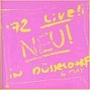
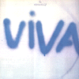
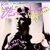
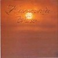

strange music page
progressive? * * * neu!
#やっぱり新宿ユニオンにて購入、2枚目を先に買っちゃってたので、その時程の衝撃は無かったですけど、やっぱ良いです、スバラシイです、良過ぎ。
"いわゆるプログレ"とは対極の位置にある(と勝手に思ってる)このアルバムがやっぱり"プログレ"コーナーに置いてあるってのもナカナカ。
ヘロヘロの頭打ちツービートに、ペラペラなギター。ただそれだけの音楽。でもサイコー。
- HALLOGALLO
- SONDERANGEBOT
- WEISSENSEE JAHRESUBERBLICK
- IM GLUCK
- NEGATIVLAND
- LIEBER HONING
- Klaus Dinger
- Michael Rother
Germanophone: 941025 (original release 1972 - BRAIN RECORDS)
#新宿disk unionにて、とうとう買っちゃいました。たぶんLPからのブートなんで、なんか途中音飛びとかあるんですけど。なんかスゴいヘロヘロな単一ビートにいい加減なギターがのってて、なんか凄くシヤワセな気分に浸れる感じ。
光のある方向に車で突っ走っていくようなそんな感じの音楽。素晴らしいです。特に4曲目のヘロヘロした叫び声から少しずつ盛り上がってきて、ギターが重なる瞬間とか。アドレナリン出まくりです、もう一回聴いてもまた出るアドレナリン。
ハルモニア(Neu!のM.RotherとClusterの二人)を先に買ってたので勝手にそんな感じかなと思ってたんですけど、全然違ってました。似たような曲も有るんですけど、なんか根本的に志向が全然違うような。私はこっちの方が断然好きですね。
頼むから正規盤で出して欲しいです＞CAPTAIN TRIP様。(1999.7.10)
#追記:正規盤出ました、3枚まとめて。Germanophoneから出てた方は頭のところカットされてたみたいですね、一応リマスターらしいです。(2001.6.10)

- Fur Immer (Forever)
- Spitzenqualitat
- Gedenkminute (Fur A + K)
- Lila Engel (Lilac Angel)
- Neuschnee 78
- Super 16
- Neuschnee
- Casetto
- Super 78
- Hallo Excentrico!
- Super
produced by K.Dinger,M.Rother,Conny Plank
- Klaus Dinger
- Michael Rother
Germanophone: 941026 (original release 1973 - BRAIN RECORDS)
Astralwerks: ASW30781
#3枚目、なんだかちょっと整理されておとなしくなっちゃったような気もします。やっぱり
2枚目っす、まぢ。
あ、でも音の質感とかはコニープランクらしくて遠くから聞こえてくるようなピアノの音の3曲目とか凄い綺麗だったりもします。一番好きなのは5曲目の単調さと、一斗缶を叩いたような音質。くりかえしくりかえしくりかえし〜そして6曲目でぶち切れ。(2001.5.11)

- ISI
- SEELAND
- LEB'WOHL
- HERO
- E-MUSIK
- AFTER EIGHT
produced by Conny Plank
- Michael Rother (guitars,piano,electronics)
- Klaus Dinger (vocals,percussions,organ)
- Thomas Dinger
- Hans Lampe
Germanophone: 941030 (original release 1975 - BRAIN RECORDS)
#キャプテントリップから出てるライヴ盤。テキトーにセッションしてるのを録音したよーな感じで、やっぱりスタジオ盤の奇跡のよーな高揚感は無かったりします。まぁはっきり言ってあまり面白く無いんですけど、この時代のジャーマンロックのガシャガシャした感じが好きならば。それよりもノイ4を買い損ねたのが今となっては残念。(2002.2.25)

- 6 May 72 part 2
- Silence
- 6 May 72 Part 2
- Klaus Dinger
- Michael Rother
- Kranemann
CAPTAIN TRIP RECORDS: CTCD-045 (1996)
#東京タワーみやげです。
いつもの均一なドラムでヘロヘロで無意味にハッピーなボーカルです。最初ノイ！みたいなのを期待して聴いたので「ん？」とか思ったんですけどね。根底に流れるものは一緒みたいです。
Cha Cha 2000はなんか集大成みたいな音ですね、20分くらい有るんですけど、最後の消えちゃいそうなピアノとかイイ感じです。
でもなんかこの音の軽さ/明るさはどこから出てくるんでしょうね....ちょっとやそっとのイキ方じゃないです。(1999.8.11)

- Viva
- White Overalls
- Rheinita
- Vogel (鳥)
- Geld (金)
- Cha Cha 2000 (2000年のチャチャ)
all titles composed by Klaus Dinger
- Thomas Dinger (vocals,percussions)
- Klaus Dinger (vocals,percussions,guitars,keyboards,synthesizers)
- Hans Lampe (drums,percussions)
- Andreas Schell (piano on 6.)
- Harald Konietzko (bass on 5.6.)
CAPTAIN TRIP RECORDS: CTCD-065 (original release 1978)
#元々La Dusseldorfの4枚目としてリリースされるはずだった1985年の音源。チープな80年代シンセ音のLa Dusseldorfかな。
5曲目の「America」は、この上無い程アホっぽい感じ、後半アパッチビートに合わせて「コッカコ〜ラ！コッカコ〜ラ！」とか叫んでます。もー頭悪そうな感じが、たまらんです。
後は「Cha Cha 2000」の変奏曲みたいなのが多いな。(2002.12.22)

- Mon amour
- Pipi AA
- Neondian
- America
- Cha Cha 2000/85
- Jag Alskar Dig
produced by Conny Plank
- Klaus Dinger (guitars,keyboards,synthesizers,vocals)
- Jaki Liebezeit (percussions on 1.)
- Charly T.Charly (drums on 1.3.4.6.)
- Raoul Walton (bass on 1.3.4.6.)
- Bodo Staiger (slide guitar on 4.)
- Spinello (guitars on 1.3.4.)(mandolin on 6.)
CAPTAIN TRIP RECRODS: CTCD-016 (1995, recorded 1985)
#府中街道沿いのdisk union(稲田堤だったけな?)にて、珍しく定価で購入\1800。HarmoniaはClusterの2人と元NeuのM.Rotherのバンドで割と何も考えてない電子音楽です。今聴くと人力テクノポップみたいで面白いです。4曲目とかすげー格好良いと思いました、何かに似てると思ったらBuffalo Daughterですね。というかBaffalo Daughterがこれに似てるのか。(1999.1.24)

- watssi
- sehr kosmisch
- sonnenschein
- dino
- ohrwurm
- ahoi!
- veterano
- hausmusik
produced by Conny Plank,Harmonia
- Hans-Joachim Rodelius (organ,guitars,electric percussion)
- Dieter Moebius (synthesizers,guitars,electric percsssion)
- Michael Rother (guitars,organ,piano,elecric percussion)
POLYDOR: POCP-2387 (original release 1974 - BRAIN RECORDS)
#ええぇと、ほんとは1枚目の方が好きな、HARMONIAの2枚目。ちょっと前作よりもCLUSTER色が強いような気もします。とても完成度高いドイツロックなんですけど、なんだかちょっと整理されすぎちゃってるような気がしてまして....ちなみにGURU GURUのMani Neumeierがdrumsで参加、Maniさんの方が上手なドラマーと思いますけど、この手のハンマービートはやっぱKlaus Dingerがイチバンなんだなぁと、思ってしまいました。

- De Luxe (immer sieder)
- Walky Talky
- Monza (rauf und runter)
- Notre Dame
- Gollum
- Kekse
produced by Conny Plank,Harmonia
- Michael Rother (guitars,keyboards,vocals)
- Hans-Joachim Roedelius (keyboards)
- Dieter Moebius (synthesizers,nagoja harp,vocals)
- Mani Neumeier (drums)
POLYDOR: POCP-2388 (original release 1975 - BRAIN RECORDS)